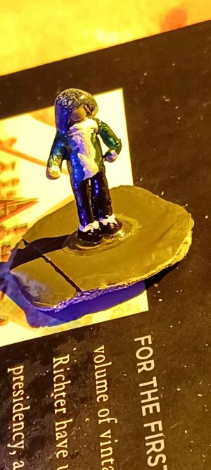

Inventory
Including feats, spells both in use and archived.
Home
Lore
Diary
Dematra's Last Stand

As of right now, Asriel has her entire party's inventory available to her, as well as the following:
Ice Bane
289 g + 1 Kingdom of Frost palace gold
Prezels x 2
Alchemist's Tools
Mysterious Attack Boost Potion